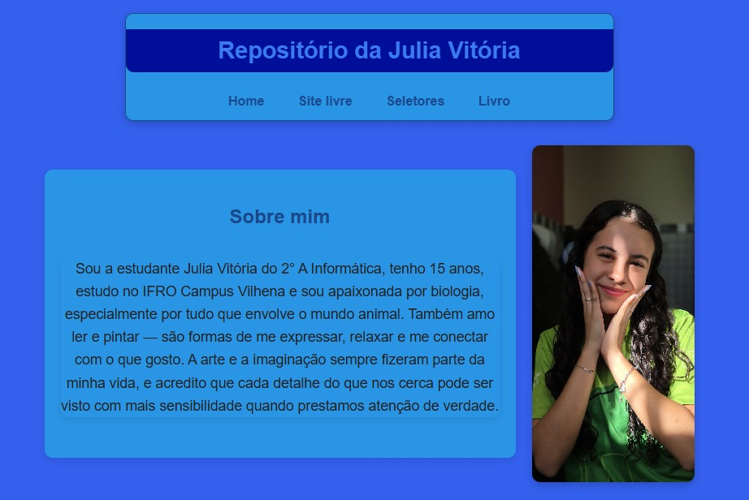
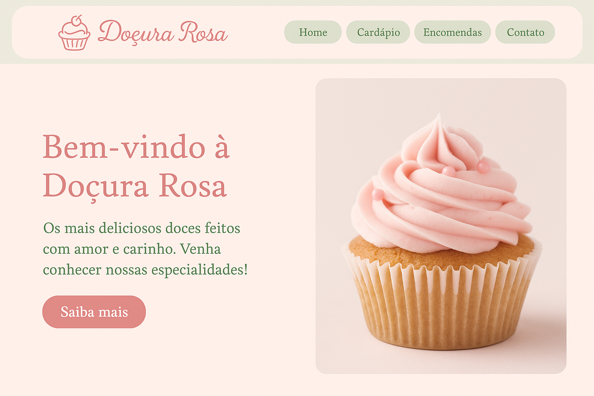
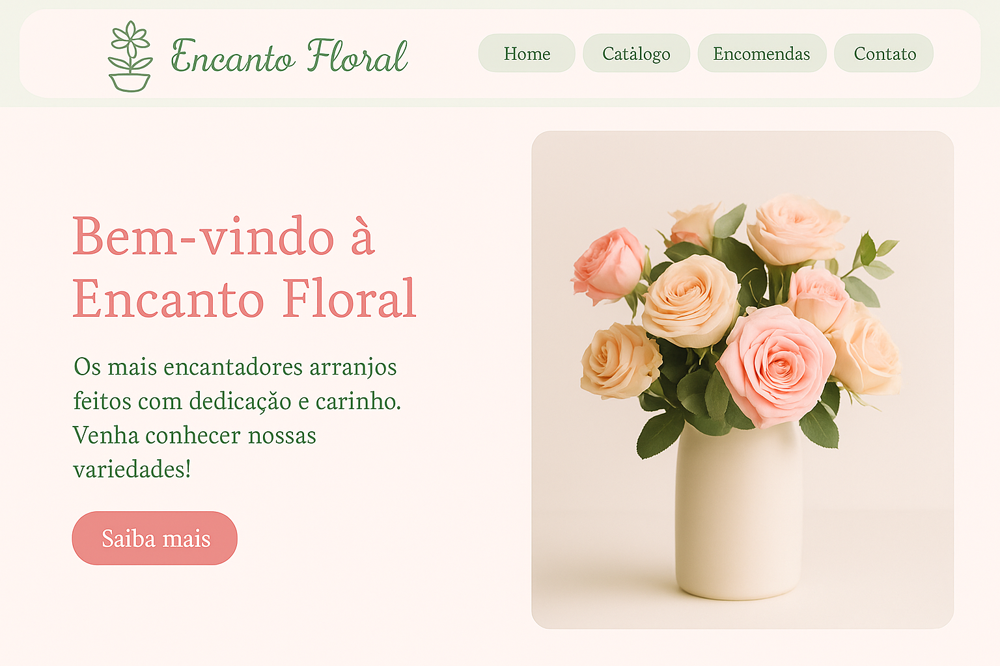

Casa dos Livros
Descrição breve do Projeto 1, explicando o que foi feito e qual foi o objetivo.

Site 1° Bimestre
Esse foi o meu primeiro site completo feito com HTML e CSS, unindo uma página pessoal com informações sobre mim e uma seção temática sobre a Casa Sonserina, do universo Harry Potter.

Doçura Rosa
O site Doçura Rosa foi criado como um projeto fictício em HTML e CSS para representar uma confeitaria charmosa e artesanal. Com cores suaves, ele transmite a ideia de carinho e delicadeza nos doces oferecidos.

Encanto Floral
O site Encanto Floral foi criado como um projeto fictício em HTML e CSS para representar uma floricultura delicada e acolhedora. Com cores suaves e um visual romântico, transmite a beleza e o cuidado presentes em cada arranjo floral.